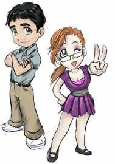
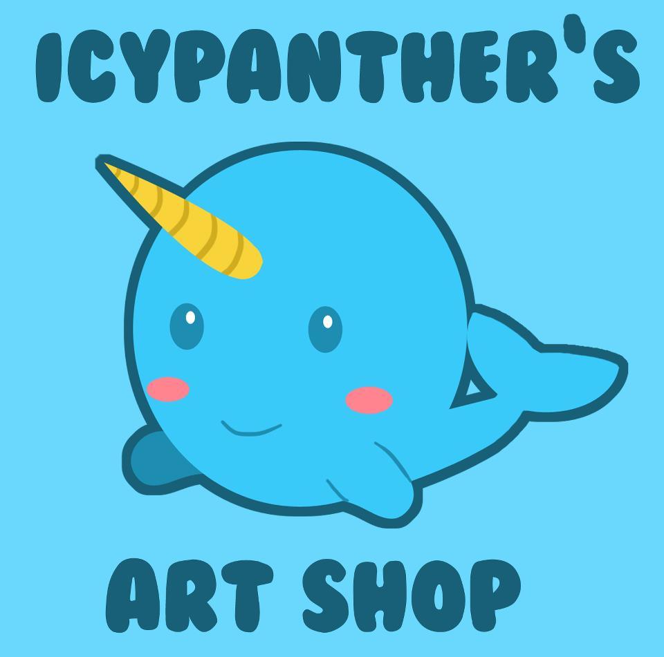
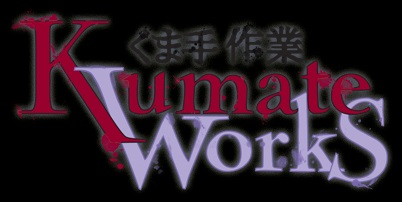

Anime Fan Zone
AFZ specializes in anime and gaming merchandise. AFZ carries a huge variety of DVDs, Plush, Tshirts, Gaming, Wall Scrolls, Mugs, and much more!
Anime Klub
Anime Klub the one stop for all your anime goods and snacks needs!
Cardz Xtcetera
We specialize in Anime, Manga, Gaming, Collectibles, dice, Cosplay and Steampunk accessories. We also carry a variety of Japanese snacks.
CutieCakesInc.
Two kawaii decoden artists with a passion for kawaii fashion. We sell all sorts of decoden jewelry as well as decoden accessories. This inculeds cupcake necklaces, decoden necklaces, rings, earrings, notebooks, pocket mirrors, sunglasses, bracelets, hair pins/clips, and much more!
Dork & Gamer Comics
We have a large collection of assorted manga, DVDs, comic books, and figures.
Fast Food Anime
Fast Food Anime is a convention and online retailer of anime products based in the Chicago area. Founded in 2003, Fast Food Anime is a first-stop favorite at convention appearances, carrying anime DVDs, soundtrack CDs, manga (graphic novels), n ovelty merchandise, and snacks including the "Great Wall of Pocky."
Frost Yourselves
www.frostyourselves.com (Under Construction)
Custom tiny hats, accessories and fashion for the creative minded otaku! Custom tiny hats, accessories and fashion for the creative minded otaku!
IcyPanther's Art Shop
IcyPanther's Art Shop is bursting with cuteness! Adorable chibi characters from a bunch of animes, mangas and series are featured on items like buttons, tote bags, charms and more! Plus check out squee-worthy clay miniatures and phone charms!
Involute Studio
Involute Studio is a constant testing ground for crafts of all kinds. The products are inspired by everything from videogames and TV to comics and movies. I am a maker and crafter above all else. My products are varied because I am constantly trying and learning new techniques. I’ve gone from 2D prints and clay sculptures, to 3D Perler Bead Sprites and LED lit Potion Bottles. Come by and see my newest creations! Involute Studio offers a wide range products: Fan Art and Original Prints, 2-dimensional and 3-dimensional Perler Bead Pixel Art, Hand Sculpted and Crafted Key Chains, Magnets, Pins, and Earings, and . . . . backed by popular demand . . . my newest product, Glowing Potion Bottles!!!
Jhim43.com

Jhim43.com was founded in early 2003 by Chicago artist, Jim Nelson, using a moniker developed as an internet ID in 1997. Jhim43 was founded primarily in the interest of producing cartoons and comics, but also partakes in additional art forms. The Jhim43.com website is a way to show a sampling of material to the rest of the world.
Kumate Works
Kumate Works is an independent comic studio that specializes in fantasy fiction comics and pulp-fiction style illustrated books. We also carry original fantasy art and craft items. Comics, pulp-fiction style publications, posters, prints, silk bags, handmade plush dolls, etc.
Panda Rage Productions
Now in our 13th year of AWESOME. Panda Rage Productions presents Onward Bound, an original fantasy/ western comic series. Original graphic novels, light novels, audio dramas based on our long-running online comic series Onward Bound!
Rainbow Lion Designs

Rainbow Lion Designs is a small business providing high quality furry and rave items as well as custom commissions!
SweetPlushieCake Creations

Specializing in one of a kind plush and deco designs. Featuring a wide selection of kawaii goods including mini plush, character hats and backpacks, and a free raffle for all who stop by in the Artist's Alley.
Tangerine Mountain Imports and Designs
Tangerine Mountain Imports and Designs specializes in vintage Japanese fashion and accessories. All of our clothing is imported directly from Japan, and all of our accessories have been carefully selected to make you "oooh" and "awww!" We pride ourselves that we can dress you in traditional Japanese style at almost any budget!
The Pixel Mages
We are traveling photographers and digital artists! We try our best to provide a magical time and a great photo of your cosplay by doing custom special effects and photomanipulations for cosplay photography.
ToughTurtles
ToughTurtles features a variety of Perler bead work from various video gamesand anime series: Pokemon, My Little Pony, Super Mario, Sailor Moon, Vocaloid, and more! Necklaces, keychains, magnets, and pins can be bought with your favorite sprites! We also sell buttons depicting your favorite characters from a variety of series, including Homestuck and Attack on Titan!